Kā sākt strādāt
- Jābūt instalētiem Elva Baltic SIA risinājumiem Latvian Payroll, Latvian Payroll Advanced un Latvian Personnel.
- Administrēšanai jāizmanto lomu centrs “LV Personāls”. Izmantojot personalizēšanu, jāatver atbilstošas funkcijas:
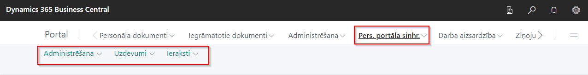

- No Panorama 365 izstrādātājiem jāsaņem sekojoša informācija:
- API adrese
- Lietotāja vārds
- Parole
Sinhronizācijas uzstādījumi
- Personāla portāla uzstādījumi (piemērs, pēc nepieciešamības var mainīt, tai skaitā Dimensiju sasaistīšana):
- Sinhronizācijas atsekotāju tabulas un lauki. Lai tos uzstādītu, ir iespējams ieimportēt (attiecināt) konfigurācijas pakotni un mainīt uzstādījumus pēc nepieciešamības:
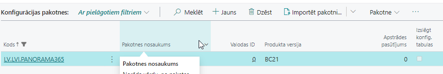
Rezultātā Sinhronizācijas atsekotāju tabulu lapā tiks izveidoti ieraksti:

Nepieciešamības gadījumā var mainīt lauku Sūtīšanas filtrs BC tabulai (piemēram, radinieka kods, kalendāra kods, prombūtnes kods u.c.). Katram ierakstam ir definēti atbilstošie lauki, kuri tiks sinhronizēti. Piemēram, prombūtnēm ir definēti sekojoši lauki:
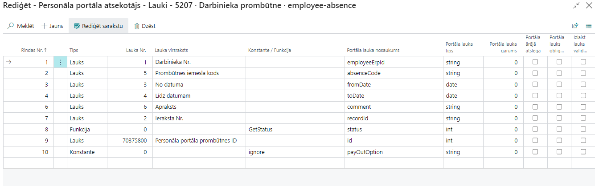
- Ja nepieciešams automatizēt sinhronizāciju, šis process ir jādefinē procesu rindās. Lapā Procesu rindu ieraksti jāizveido procesa kartiņa (ja tika importēta konfigurācijas pakotne, tad šis process tiks izveidots automātiski; var pārbaudīt tikai uzstādījumus konkrētam uzņēmumam).

Automātiskai atvaļinājumu dienu atlikumu sinhronizācijai ir nepieciešams sekojošs process, kura periodiskumu vajag uzstādīt izpildei ne biežāk kā vienu reizi dienā:

- Prombūtņu saņemšanai no Panorama 365 ir jānodefinē uz kurieni atnāks informācija no Panorama 365 par konkrētu prombūtnes veidu. Lai to definētu, jāatrod prombūtņu iemeslu katalogs un jāaizpilda sadaļa Personāla portāls.
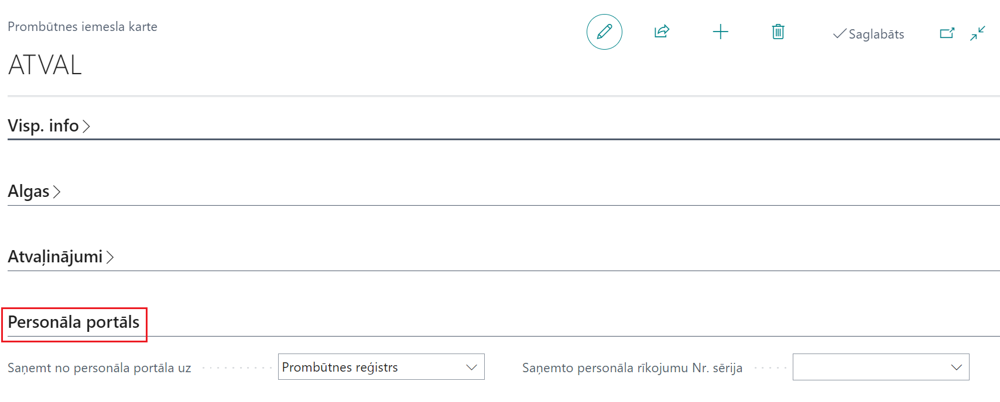
No Panorama 365 ir iespējams saņemt informāciju Prombūtnes reģistrā vai sadaļā Personāla rīkojumi.
Ja izvēlēts Personāla rīkojums, jānorāda Saņemto personāla rīkojumu Nr. sērija. Ar šo numuru sēriju tiks veidoti rīkojumi, saņemot informāciju no Panorama 365.
Gadījumā, ja šī prombūtnes kartes sadaļa nav aizpildīta, prombūtnes ar šo kodu no Panorama 365 netiks sinhronizētas.
- Piemaksu saņemšanai no Panorama 365 atbilstošajām algas komponentēm jānorāda, kurā vietā tiks saņemta informācija no Panorama 365:

Pastāv iespēja izvēlēties opcijas:
- Personāla rīkojums
- Komponenšu reģistrs
- Avansu saraksts
Atkarībā no izvēlētā veida, Dynamics 365 Business Central veidos: 1) personāla rīkojumu ar atbilstošu algas komponentes kodu, vai 2) izveidos ierakstu atbilstošā mēneša komponenšu reģistrā, vai 3) izveidos ierakstu atbilstošā mēneša avansu sarakstā. Gadījumā, ja šis lauks netiks aizpildīts, piemaksas no Panorama 365 ar šo algas komponentes kodu netiks sinhronizētas.
Manuālā sinhronizācijas procesa palaišana
Gadījumā, ja nepieciešams veikt sinhronizāciju ārpus grafika, to var izdarīt: Pers.port.sinhr. -> Uzdevumi-> Sinhronizēt ar personāla portālu

Nospiežot Ģenerēt atvaļinājuma dienas - tiks pārģenerēts atvaļinājumu dienu buferis, un ar nākamo sinhronizācijas palaišanu tiks nosūtīti atjaunoti dati Panorama 365.
Ko darīt, ja nenotiek plānotā sinhronizācija
Ja kāda iemesla dēļ sinhronizācija nenotiek, ir jāatrod iemesls. Lai to izdarītu:
Jāpārbauda, vai atbilstošā procesa rindas ieraksta statuss ir Gatavs un nav kļūdas paziņojuma.
Jāpārbauda, vai sinhronizācijas ierakstos visi ieraksti ir apstrādāti. Lai to izdarītu, jāatver Personāla portāla sinhronizācijas ieraksti. Ja vismaz vienam ierakstam ir statuss Neapstrādāts, tas nozīmē, ka Dynamics 365 Business Central ieraksti nav nosūtīti uz Panorama 365.
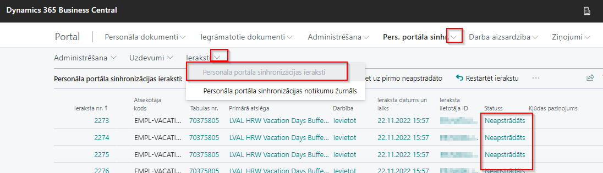
Jāatrod pirmais ieraksts ar statusu “Kļūda”. To var izdarīt, nospiežot pogu Iet uz pirmo neapstrādāto:
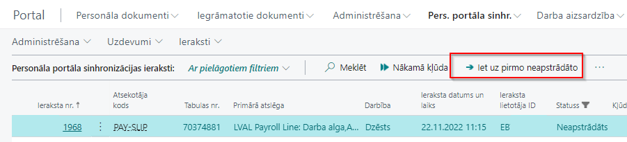
Pēc kļūdas paziņojuma jāmēģina atrisināt problēmu. Kad dati sakārtoti, var Nosūtīt izmaiņas:

Ja problēmu novērst nevar, bet sinhronizācija jāpalaiž, ierakstu var atcelt. Tomēr jāņem vērā, ka šis ieraksts netiks nosūtīts uz Panorama 365 un jāpārbauda, vai nākamie ieraksti nav saistīti ar atcelto, pretējā gadījumā jāatceļ arī visi saistītie ieraksti. Tad jāizvēlas Atcelt ierakstu:
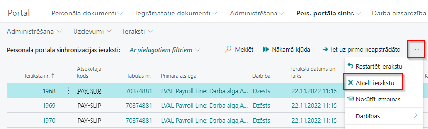
- Gadījumā, ja sinhronizācijas ierakstos visiem ierakstiem ir statuss Apstrādāts, bet sinhronizācija tomēr nenotiek, jāpārbauda Personāla portāla sinhronizācijas notikumu žurnāls.
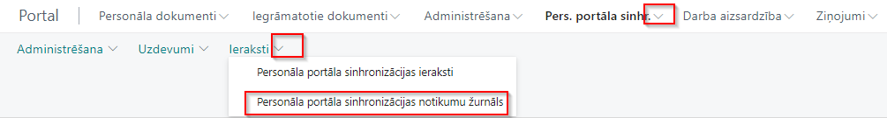
Šajā žurnālā ir fiksēts, kādi sinhronizācijas darbības procesi tika apstrādāti un to rezultāti. Gadījumā, ja, importējot datus no Panorama 365, notiek kļūda, par šo notikumu tiek veidots ieraksts šajā žurnālā.

Kad dati sakārtoti (Panorama 365 pusē vai Dynamics 365 Business Central pusē), jāpalaiž sinhronizācijas process – manuāli vai ar procesa rindu, ja tā ir apstājusies.
Periodiski šī žurnāla ieraksti jādzēš, lai neglabātu pārāk daudz ierakstus. Šim nolūkam ir izveidota funkcija Dzēst ierakstus, kura dzēsīs visus šajā lapā atlasītos ierakstus:

- Ja problēmu nevar identificēt un vajag analizēt, kādi pieprasījumi tika izpildīti sinhronizācijas laikā, tabulā Personāla portāla uzstādījumi jāieliek ķeksis Ieslēgt atkļūdošanu. Pēc tam jāpalaiž sinhronizācija un tabulā Personāla portāla sinhronizācijas notikumu žurnāls pie pēdējā kļūdas paziņojuma jāizvēlas funkciju Eksportēt detaļas failā. Failā būs informācija par API pieprasījumiem ar Json datiem. Pēc problēmas atrisināšanas ķeksi Ieslēgt atkļūdošanu jāizslēdz, lai datu bāzē neglabātos papildus informācija (teksta faili).
Apstrādes shēmas
Personīgā informācija
Ir iespējams sinhronizēt darbinieka personīgo informāciju. Pieņemot darbā jaunu darbinieku, ievadot datus par viņu Dynamics 365 Business Central, informācija tiek nosūtīta uz Panorama 365. Panorama 365 pusē pats darbinieks var pieteikt izmaiņas:
- Adrese
- Privātais tālrunis
- Privātais e-pasts
- Bankas konts
Pēc apstiprināšanas Panorama 365 pusē, informācija tiek nosūtīta uz Dynamics 365 Business Central.
Ja šie dati tiek mainīti Dynamics 365 Business Central pusē, atjaunotie dati tiek sūtīti uz Panorama 365 automātiski.
Bērni
Darbinieks var pievienot vai modificēt informāciju par bērniem. Dzēst bērna datus Panorama 365 pusē ir aizliegts. Pēc apstiprināšanas dati tiek nosūtīti uz Dynamics 365 Business Central. Ja Dynamics 365 Business Central ir ieslēgta funkcionalitāte par papildus atvaļinājumu dienu piešķiršanu, tā pārrēķinās atvaļinājumu dienu skaitu, sākot no tekošā perioda.
Ja Dynamics 365 Business Central pusē ir ievadīti / modificēti / dzēsti dati par bērniem, informācija tiek atjaunota arī Panorama 365 pusē.
Tiek uzturēta sekojoša informācija:
- Bērna vārds / uzvārds (opcionāli - nav ieteicams aizpildīt)
- Dzimšanas datums
- Dzimums (netiek sinhronizēts, jo Dynamics 365 Business Central pusē nav tāda lauka)
- Invaliditāte
Izglītība
Ir iespējams sinhronizēt kvalifikācijas datus. Ievadot informāciju Panorama 365 pusē un pēc apstiprināšanas, informācija tiek sūtīta uz Dynamics 365 Business Central.
- Izglītības iestāde (Dynamics 365 Business Central lauks = Institūcija / uzņēmums)
- Izglītības līmenis (Dynamics 365 Business Central lauks = Kvalifikācijas kods un Apraksts)
- Izglītības veids (netiek sinhronizēts)
- Specialitāte (Dynamics 365 Business Central lauks = Iegūtais grāds)
- Datums no (Dynamics 365 Business Central lauks = No datuma)
- Datums līdz (Dynamics 365 Business Central lauks = Līdz datumam)
Ja Dynamics 365 Business Central pusē ir ievadīti / modificēti / dzēsti dati par izglītību, informācija tiek atjaunota arī Panorama 365 pusē.
Gan Dynamics 365 Business Central pusē, gan Panorama 365 pusē ir aizliegts labot kvalifikācijas kodu (Izglītības līmenis). Lai to izdarītu, ir jādzēš ieraksts Dynamics 365 Business Central pusē un jāveido jauns ieraksts Dynamics 365 Business Central vai portālā.
Dzēst kvalifikācijas ierakstus portāla pusē ir aizliegts.
Prombūtņu apstrāde
Dynamics 365 Business Central pusē, veidojot/mainot/dzēšot ierakstus prombūtņu katalogā, tie tiek nosūtīti uz Panorama 365. Sūtītā informācija: Prombūtnes kods, Prombūtnes nosaukums, G/U kods, Kalendāro dienu ierobežojums, Valsts/Reģiona kods.
Panorama 365 pusē katram prombūtnes kodam ir uzstādījumi, kā apstrādāt šo prombūtnes kodu. Galvenie sinhronizācijas uzstādījumi:

Atvaļinājumiem ir iespēja norādīt atvaļinājuma naudas izmaksas veidu:
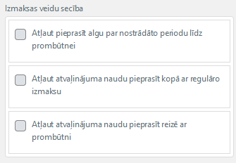
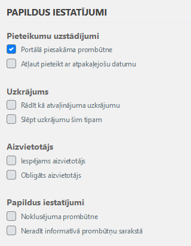
UZ Dynamics 365 Business Central tiks sūtītas Panorama 365 izveidotas prombūtnes tikai ar statusu Apstiprināts.
Atkarībā no prombūtnes uzstādījumiem Dynamics 365 Business Central, sinhronizācijas rezultātā ieraksts ir izveidots Prombūtņu reģistrā vai Personāla rīkojumos. Ja prombūtņu kodam importa veids nav noradīts, tāda prombūtne netiks importēta Dynamics 365 Business Central un par to būs brīdinājums tabulā Personāla portāla sinhronizācijas notikumu žurnāls.
Ja importēts ieraksts (personāla rīkojums) ir izdzēsts Dynamics 365 Business Central pusē vai rīkojums ir anulēts, tad Dynamics 365 Business Central uz Panorama 365 nosūtīs informāciju, ka šī prombūtne ir atcelta.
Importētus ierakstus (prombūtnes ieraksts) ir atļauts dzēst Dynamics 365 Business Central pusē, ja nav piesaistīts algas dokuments, vai Atcelt prombūtni, ja algas dokuments jau ir piesaistīts. Rezultātā Dynamics 365 Business Central nosūtīs uz Panorama 365 informāciju, ka šī prombūtne ir atcelta.
Algas lapiņas
Dynamics 365 Business Central nosūta algas lapiņu tikai, ja algas sarakstam ir statuss Nodots vai Grāmatots. Gadījumā, ja pēc tam statuss tiek nomainīts uz Atvērts, dati Panorama 365 pusē tiks izdzēsti. Ja tiks veikts pārrēķins šajā dokumentā, un nomainīts status uz Nodots vai iegrāmatots, tad dati tiks atjaunoti Panorama 365 pusē.
Gadījumā, ja aprēķins ir stornēts, uz Panorama 365 tiks sūtīta papildus algas lapiņa. Respektīvi, Panorama 365 tiks atspoguļotas visas algas lapiņas par stornētiem un nestornētiem algu sarakstiem.
Piemaksu / atvilkumu / avansu summu sinhronizācija
Lai sinhronizētu piemaksas / atvilkumus, jānosūta Dynamics 365 Business Central algas komponenšu katalogs uz Panorama 365.
Personāla Panorama 365 atsekotājs – Tabulas:
| Kods | Tabulas ID | Tabulas nosaukums | Portāla Endpoint nosaukums (eksports) | Eksportēšanas secība | Portāla objekta nosaukums (imports) | Neatsekot izmaiņas | Eksporta filtrs NAV tabulai |
|---|---|---|---|---|---|---|---|
| PAYRLCOMPONENT | 25000000 | Algas komponente | benefit-type | 10 | Nē | where(Type=Filter(Income|Without Taxes|Deduction)) |
Personāla portāla atsekotājs – Lauki:
| Rindas Nr. | Tips | Lauka Nr. | Lauka virsraksts | Konstante / Funkcija | Portāla lauka nosaukums | Portāla lauka tips | Portāla lauka garums | Portāla ārējā atslēga | Portāla lauks obligāts | Izlaist lauka validāciju |
|---|---|---|---|---|---|---|---|---|---|---|
| 1 | Lauks | 1 | Kods | code | string | 50 | Nē | Nē | Nē | |
| 2 | Lauks | 3 | Nosaukums | description | string | 500 | Nē | Nē | Nē | |
| 3 | Konstante | 0 | 0 | payAsPercent | int | 0 | Nē | Nē | Nē | |
| 4 | Funkcija | 0 | PayrlCompAmount | presetedValue | float | 0 | Nē | Nē | Nē | |
| 5 | Funkcija | 0 | IsDeleted | state | int | 0 | Nē | Nē | Nē | |
| 6 | Lauks | 25000970 | Valsts/Reģiona kods | countryCode | string | 0 | Nē | Nē | Nē |
Pamatojoties uz algu komponentēm, Panorama 365 pusē jābūt izveidotam pieteikuma veidam ar uzstādījumiem:
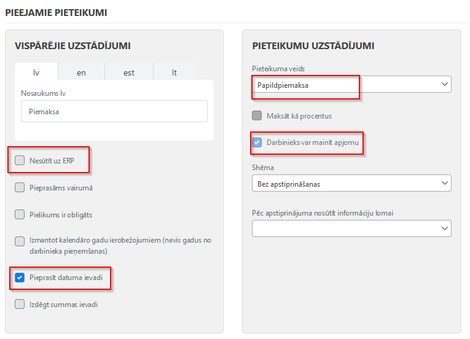
Uzstādījums Darbinieks var mainīt apjomu pabalstiem var būt izslēgts, bet Dynamics 365 Business Central pusē jābūt definētai summai (Algas komponentes karte -> Uzstādījumi -> No datuma / summa).
Gadījumā, ja Panorama 365 pusē vienā pieteikumā var būt vairāki darbinieki, ir atļauts ieslēgt opciju Pieprasāms vairumā.
Piemaksu imports
Algu komponentēs (kuras tiks sinhronizētas ar Panorama 365) jāizvēlas opcija laukā Importēt no personāla portāla uz:

No Panorama 365 uz Dynamics 365 Business Central tiks sūtīti tikai pieteikumi ar statusu Apstiprināts.
Komponenšu reģistrs
Veidojot komponenšu reģistra ierakstu, tiek pārbaudīts, vai atbilstošajā periodā jau ir izveidots komponenšu reģistrs ar pazīmi Personāla portāla izveidotais reģistrs. Ja tāds komponenšu reģistrs jau pastāv, tiek izveidota rinda ar Darbinieka Nr., Algas komponentes kodu un Summu. Ja reģistrs nav izveidots, tad ņemot vērā piemaksas Panorama 365 datumu, tiek veidots jauns komponenšu reģistrs ar atbilstošo gadu un mēnesi un pazīmi Personāla portāla izveidotais reģistrs.
Ja Panorama 365 pusē izveidots pieteikums vairākiem darbiniekiem vienlaicīgi, tad Dynamics 365 Business Central pusē tiek veidots atsevišķs komponenšu reģistrs.
Komponenšu reģistru ir atļauts izdzēst visu, vai izdzēst atsevišķas komponenšu reģistra rindas, tad Dynamics 365 Business Central nosūtīs uz Panorama 365 informāciju, ka šis ieraksts ir atcelts. Modificēt ierakstus, kuri tika importēti no Panorama 365, nav atļauts.
Personāla rīkojums
Veidojot personāla rīkojumu, tiek pārbaudīts - ja pastāv iegrāmatotā personāla rīkojuma rinda ar importētu Personāla portāla ID, tad process beigsies ar kļūdas paziņojumu Personāla portāla notikumu žurnālā un uz Panorama 365 tiks nosūtīts statuss Atcelts. Ja pastāv personāla rīkojuma rinda ar importētu Personāla portāla ID un statusu, kas nav vienāds ar Izveidots, tad process beigsies ar kļūdas paziņojumu Personāla portāla notikumu žurnālā. Pretējā gadījumā, ja personāla rīkojuma rinda nav atrasta, tiks veidots jauns rīkojums un rinda ar importētu darbinieku un notikumu veidu - Piemaksa/Atvilkums.
Tiek aizpildīti sekojoši Rindas kartes lauki:
- Komponentes kods
- Datums
- Summa
- Personāla portāla ID
Katram pieteikumam tiek veidots atsevišķs rīkojums, izņemot gadījumus, kad Panorama 365 pusē tiek veidots pieteikums vairākiem darbiniekiem vienlaicīgi. Tādā gadījumā tiek veidots viens rīkojums ar vairākiem darbiniekiem. Modificēt rīkojumu, rīkojuma rindu vai rīkojuma rindas karti ir aizliegts. Rīkojums jāgrāmato. Nepieciešamības gadījumā rīkojumu var atcelt, tad Dynamics 365 Business Central nosūtīs uz Panorama 365 informāciju, ka šis ieraksts ir Atcelts.
Gadījumā, ja nav iespējams nomainīt statusu uz Pabeigts, jo nostrādā standarta pārbaudes (piemēram, jau eksistē algas saraksts), lai iegrāmatotu rīkojumu, ir atļauts rīkojumu / rīkojuma rindu izdzēst. Uz Panorama 365 tiks nosūtīts statuss Atcelts.
Avansu saraksts
Veidojot avansu sarakstu, gadījumā, ja Panorama 365 pieteikums bija izveidots vairākiem darbiniekiem vienlaicīgi, tad katram pieteikumam tiek izveidots atsevišķs saraksts. Gadījumā, ja pieprasīts avanss atsevišķiem darbiniekiem, tad tas tiks importēts pirmajā atvērtajā avansa sarakstā, kurā nav iekļauts šis darbinieks. Tiek aizpildīta informācija algu komponenšu rindai:
- Kods
- Summa
Avansa sarakstu un rindas var dzēst. Tādā gadījumā Dynamics 365 Business Central nosūtīs uz Panorama 365 informāciju, ka šis ieraksts ir Atcelts. Modificēt ierakstus, importētus no Panorama 365, ir aizliegts.
Ja Panorama 365 datus par mēnesi, kurā jau eksistē algas rinda, tad:
- Ja algas saraksta statuss ir Atvērts, tad par to būs kļūdas paziņojums un sinhronizācijas process apstāsies.
- Ja algas saraksta statuss ir Nodots vai Grāmatots, tad kļūda tiks fiksēta notikumu žurnālā, Dynamics 365 Business Central nosūtīs uz Panorama 365 informāciju, ka šis ieraksts ir Atcelts, bet sinhronizācijas process turpināsies.
Darba laika uzskaite
Panorama 365 sūta uz Dynamics 365 Business Central visus iepriekš nenosūtītus darba laika uzskaites datus, kuriem ir statuss Apstiprināts, neskatoties par kādu periodu ir dati.
Dynamics 365 Business Central tiek saņemts tikai faktiskais darba laiks (uzskaite). Plānotās stundas netiek sinhronizētas.
Tiek sūtīta sekojoša informācija (no tabulas employee-hour-periods):
- Datums
- Kopējās dienas stundas
- Nakts stundas
- Amata Nr. (ja nav aizpildīts, tad tiek atrasts galvenais amats uz šo datumu)
Uzskaites ierakstos tiek veidotas rindas tikai par datumiem, kuri tika atsūtīti no Panorama 365 puses. Lai Dynamics 365 Business Central pievienotu prombūtnes šai uzskaitei, vajag palaist funkciju Kopēt no prombūtņu reģistra.
Dimensijas netiek apstrādātas.
No Panorama 365 saņemtiem datiem tiek veidots viens uzskaites dokuments atbilstošajā periodā.
Amata maiņas gadījumā, pirms sūtīt darba stundas no Panorama 365, jāsasinhronizē jauns amats ar Panorama 365.
Saņemtās faktiskās stundas var rediģēt vai dzēst Dynamics 365 Business Central. Uz Panorama 365 šīs izmaiņas netiks sūtītas, līdz ar to informācija var atšķirties.